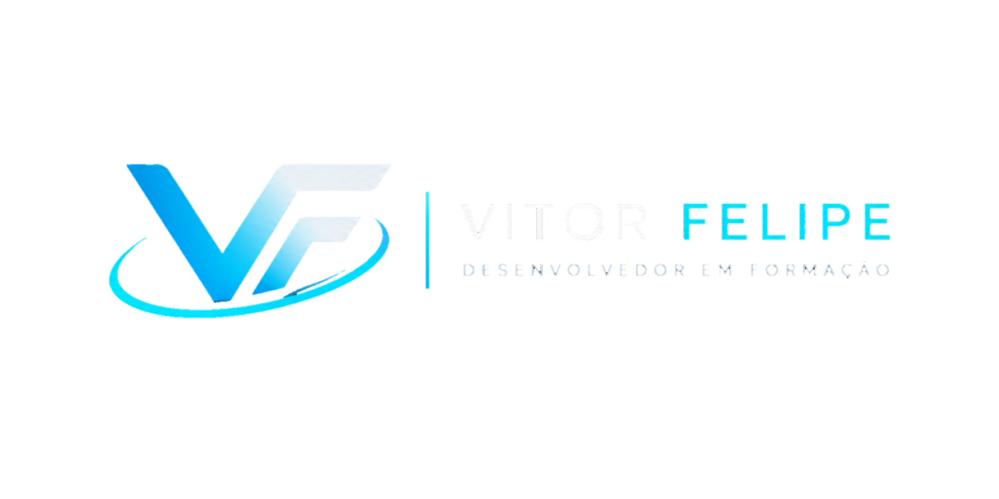

Python
Estudando os fundamentos da linguagem Python e desenvolvendo pequenos programas para praticar os conhecimentos adquiridos.

Desenvolvedor em formação
Sou estudante de desenvolvimento de software, com foco em Python e na construção de soluções práticas. Estou desenvolvendo minhas habilidades por meio dos estudos e de projetos próprios.
Conheça meus projetosMinha trajetória
Estudando os fundamentos da linguagem Python e desenvolvendo pequenos programas para praticar os conhecimentos adquiridos.
Construindo minha base em algoritmos, estruturas de controle e resolução de problemas por meio da programação.
Aplicando os conhecimentos dos estudos em projetos próprios, buscando evoluir gradualmente na construção de software.
Portfólio
Projeto acadêmico de um site para uma organização de proteção animal. Desenvolvido como atividade prática para aplicar conhecimentos de HTML, CSS e JavaScript.
Sobre mim
Sou estudante de Ciência da Computação, com foco em back-end e Python. Estou construindo minha base em lógica de programação e desenvolvendo projetos práticos para transformar o conhecimento em experiência.
Busco minha primeira oportunidade profissional em tecnologia, onde eu possa contribuir, aprender com outros desenvolvedores e evoluir na resolução de problemas reais.
Contato
Estou em busca da minha primeira oportunidade profissional em tecnologia. Se fizer sentido conversarmos, é só me chamar.